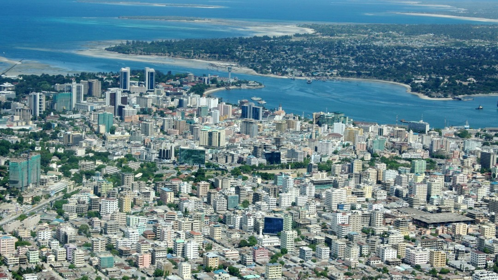
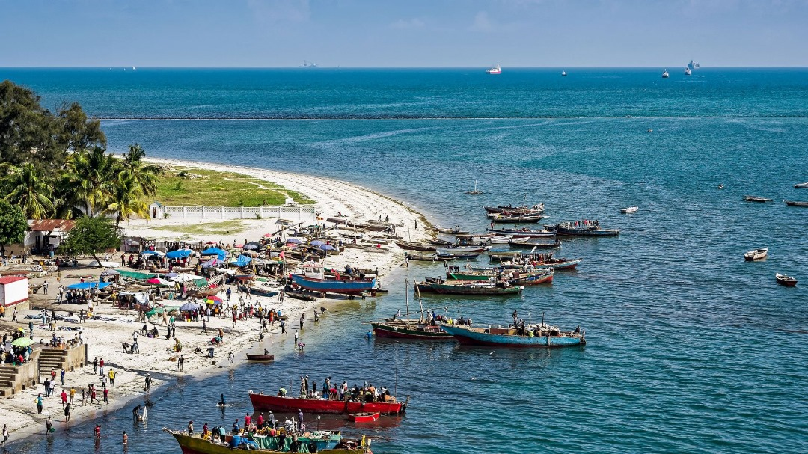
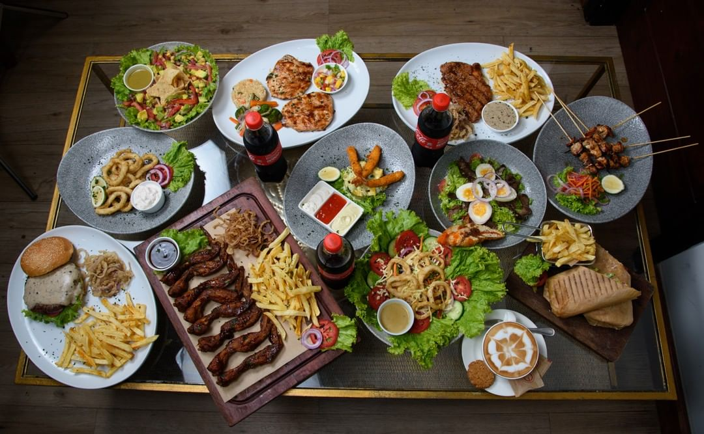

Overview

Dar es Salaam, the largest city and economic hub of Tanzania, is located on the eastern coast of Africa along the Indian Ocean. Known for its bustling ports, vibrant markets, and rich cultural heritage, Dar es Salaam offers a unique blend of modernity and tradition.
Culture

Dar es Salaam is a melting pot of cultures, influenced by Swahili, Indian, Arab, and Western traditions. The city hosts various festivals and events, showcasing music, dance, and art that reflect its diverse heritage.
Local Cuisine

The food scene in Dar es Salaam is vibrant and delicious. From street food like mishkaki (grilled meat skewers) to coastal dishes like biryani and seafood platters, the city offers something for every palate.